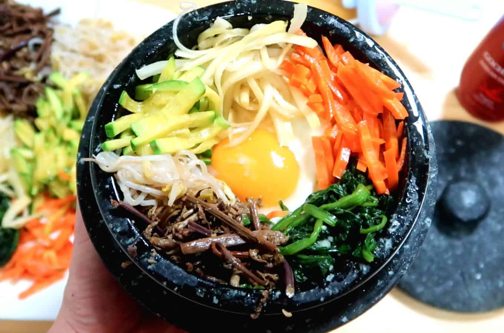

Bibimbap

Description
Bibimbap is a popular Korean mixed rice dish. It typically consists of rice topped with various sautéed and seasoned vegetables, meat, an egg, and a flavorful sauce.
Ingredients
- Bellflower Roots Muchim:
- Bellflower root - 150 grams
- Salt - 1 tablespoon for soaking in water
- Salt - a few shakes when pan-frying
- Bracken Muchim:
- Bracken Fernbrake - 150 grams
- Sesame oil - 1 tablespoon
- Minced garlic - 1 teaspoon
- Soy sauce - 1 teaspoon
- Spinach Muchim:
- Minced garlic - 1 teaspoon
- Sesame oil - 1 teaspoon
- Salt - a pinch
- Blanched Mungbean Sprouts:
- Mungbean sprouts - 150 grams
- Carrot & Zucchini Stir-fry:
- Carrot - ½ a whole
- Zucchini - ⅓ a whole
- Sesame oil - 2 teaspoons
- Salt - a few pinches
- Dolsot Bowl Assembly:
- Sesame oil - 1 tablespoon
- Rice - 1 cup
- Egg - 1 sunny side-up
- Gochujang - 1 tablespoon
Steps
- Prepare the Bellflower Roots Muchim by soaking the bellflower roots in water with 1 tablespoon of salt. Shake off excess water and pan-fry with a few shakes of salt.
- For the Bracken Muchim, mix bracken fernbrake with sesame oil, minced garlic, and soy sauce.
- Make the Spinach Muchim by mixing minced garlic, sesame oil, and a pinch of salt with blanched spinach.
- Prepare the Blanched Mungbean Sprouts by blanching them in boiling water and draining.
- Stir-fry the carrot and zucchini with sesame oil and a pinch of salt.
- Assemble the Dolsot Bowl by drizzling sesame oil, adding rice, sunny-side-up egg, and gochujang.